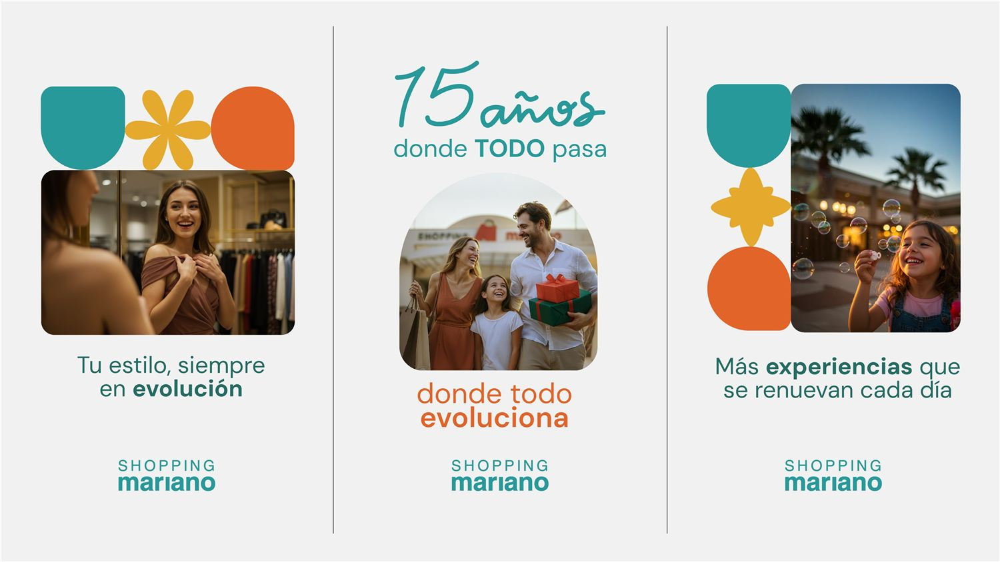
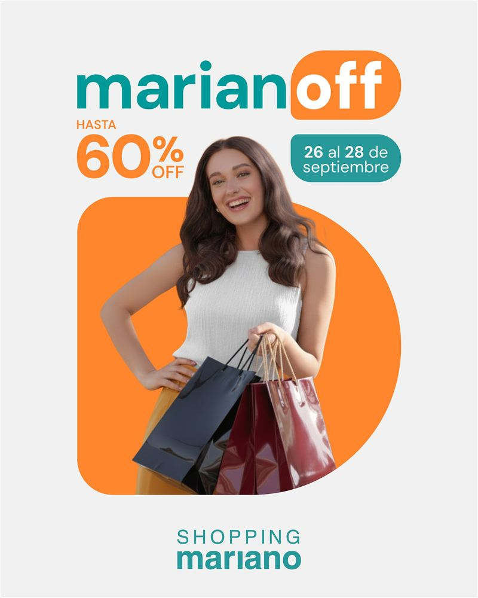
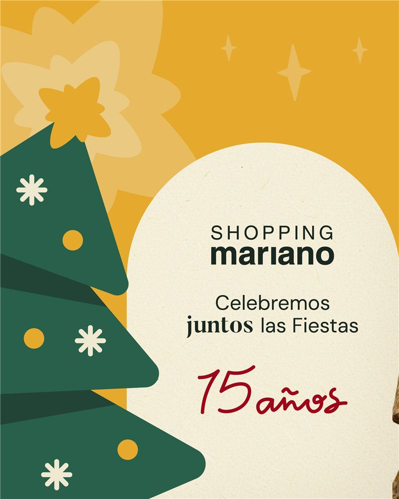
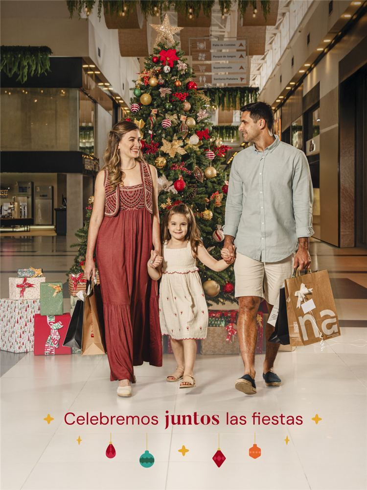
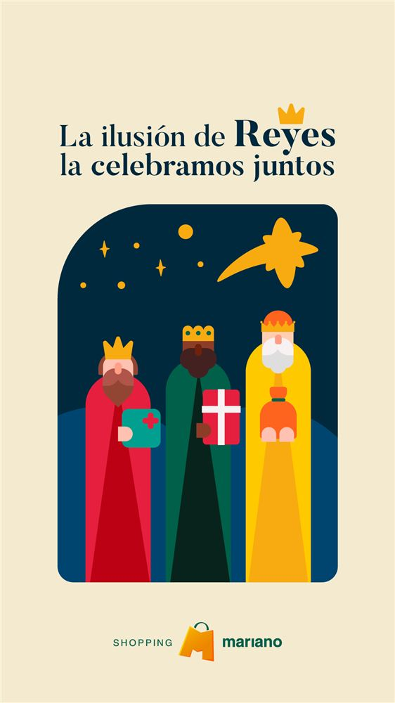

Branding · Sistema visual · 2025
Shopping Mariano
15 años
Un 15 trazado a mano y un set de formas que cuentan lo que pasa en el shopping: el puente hacia su nueva marca.
Mi contribución
En Periferia Comunicación, diseñé el key visual de la campaña de los 15 años (2025) y sus aplicaciones, y acompañé su continuidad hasta comienzos de 2026.
Contexto
Un aniversario en plena transición
El shopping cumplía 15 años el mismo año en que Mariano Roque Alonso celebraba su 80.º aniversario. La marca estaba por cambiar de identidad (la nueva se lanzó en marzo de 2026): había que ser conmemorativo y, a la vez, mostrar un shopping en evolución.
Idea
«Donde todo pasa, donde todo evoluciona»
Formas con significado (Magia, Ideas e innovación, Juegos) que se combinan como piezas, enmarcan fotos y llevan mensajes. La M de la marca es una forma más del sistema.
Sistema
Un sistema que se arma
Sello con un 15 escrito a mano, paleta de verde petróleo, turquesa, naranja, coral y amarillo, y DM Sans con el trazo manuscrito. Las imágenes fotográficas se generaron con IA bajo una dirección de imagen unificada, con la misma luz cálida; el sello, el sistema de formas, las composiciones y las piezas gráficas los diseñé yo.

Aplicaciones
En todas partes, hasta fin de año
Digital, prensa, versiones con locatarios, activaciones y mockups de merchandising. La línea no terminó con el aniversario: siguió en Marianoff, en la campaña de fin de año con el sello en verde y dorado, en Navidad y en el KV de Día de Reyes.




Créditos
- Cliente
- Shopping Mariano
- Agencia
- Periferia Comunicación
- Claim
- Lau Monello (creatividad)
- Diseño, sistema visual, dirección de imagen con IA y animación
- Kevin Mancuello